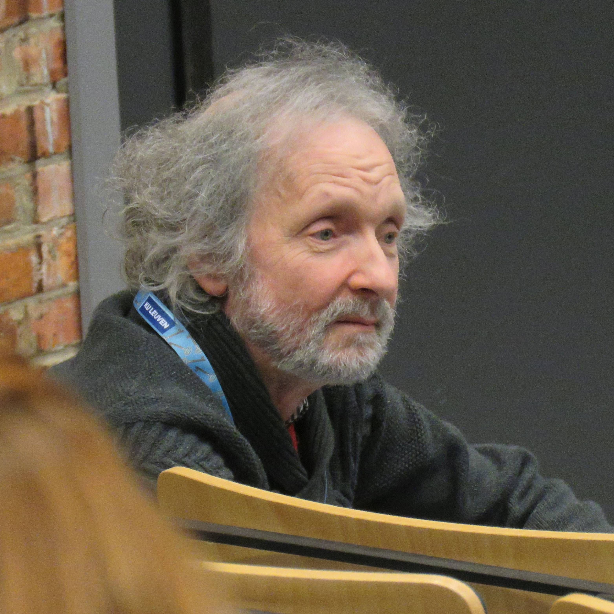

It is with deep sadness that we learned of the passing of emeritus professor Etienne Waelkens at the age of 72. Etienne will be dearly missed by his family, friends, and colleagues. He was a valued member of our Society, attending every meeting from 2008 to 2021 without fail. As co-organizer of the 2017 BSMS meeting in Leuven, his contribution made this a successful and unforgettable symposium. As a medical doctor and researcher, Etienne dedicated his professional life to the study of protein phosphorylation, proteomics and imaging mass spectrometry exploring the therapeutic potential of kinases and phosphatases. His contributions to science were both significant and inspiring.
Etienne will be remembered by all who knew him as a friendly, optimistic, and always smiling presence - a colleague who brought warmth and positivity to every interaction.

The Belgian Society for Mass Spectrometry (BSMS) is the meeting point
for people involved in mass spectrometry in Belgium and was founded in 1996.
The objectives of the society are:
- to provide a forum for open discussion on all aspects of mass spectrometry between practitioners and individuals or companies interested in the field.
- to represent its members in the European and International Mass Spectrometry Societies.
The main annual activity of the BSMS is the organisation of a high quality scientific meeting.
We can be contacted by email.
about us
Our members, our board, our statutes.
more...
meetings
We organize an annual meeting with a high quality scientific program related to fundamental and applied mass spectrometry and which brings mass spectrometrists together for discussions and networking.
more...
bsmsnews
We announce our activities, other meetings and jobs related to mass spectrometry.
more...